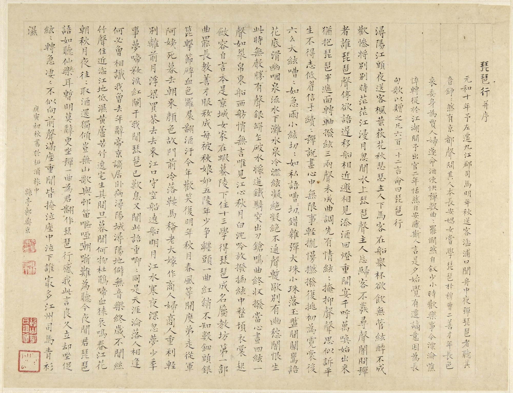

The Song of the Pipa
| Traditional | Transliteration | Simplified |
|---|---|---|
|
潯陽江頭夜送客，楓葉荻花秋瑟瑟。 主人下馬客在船，舉酒欲飲無管弦。 醉不成歡慘將別，別時茫茫江浸月。 忽聞水上琵琶聲，主人忘歸客不發。 寻声暗问彈者誰，琵琶聲停欲語遲。 移船相近邀相見，添酒回燈重開宴。 千呼萬喚始出來，猶抱琵琶半遮面。 轉軸撥弦三兩聲，未成曲調先有情。 弦弦掩抑聲聲思，似訴平生不得誌。 低眉信手續續彈，說盡心中無盡事。 輕攏慢拈抹復挑，初為霓裳後六幺。 大弦嘈嘈如急雨，小弦切切如私語。 嘈嘈切切錯雜彈，大珠小珠落玉盤。 間關鶯語花底滑，幽咽流泉水下灘。 水泉冷澀弦凝絕，凝絕不通聲暫歇。 別有幽愁暗恨生，此時無聲勝有聲。 銀瓶乍破水漿迸，鐵騎突出刀槍鳴。 曲終收撥當心畫，四弦一聲如裂帛。 東船西舫悄無言，唯見江心秋月白。 沈吟放撥插弦中，整頓衣裳起斂客。 自言本是京城女，家在蝦蟆陵下住。 十三學得琵琶成，名屬教坊第一部。 曲罷常教善才服，妝成每被秋娘妒。 五陵年少爭纏頭，一曲紅綃不知數。 鈿頭雲篦擊節碎，血色羅裙翻酒汙。 今年歡笑復明年，秋月春風等閑度。 弟弟從軍阿姨死，暮去朝來顏色故。 門前冷落車馬稀，老大嫁作商人婦。 商人重利輕別離，前月浮梁買茶去。 去來江口空守船，繞船明月江水寒。 夜深忽夢少年事，夢啼妝淚紅闌幹。 我聞琵琶已嘆息，又聞此語重唧唧。 同是天涯淪落人，相逢何必曾相識。 我從去年辭帝京，謫居臥病潯陽城。 潯陽地僻無音樂，終歲不聞絲竹聲。 住近湓江地低濕，黃廬苦竹繞宅生。 其間旦暮聞何物，杜鵑啼血猿哀鳴。 春江花朝秋月夜，往往取酒還獨傾。 豈無山歌與村笛，嘔啞嘲難為聽。 今夜聞君琵琶語，如聽仙樂耳暫明。 莫辭更坐彈一曲，為君翻作琵琶行。 感我此言良久立，卻坐促弦弦轉急。 淒淒不似向前聲，滿座重聞皆掩泣。 座中泣下誰最多，江州司馬青衫濕。 |
Pipa Xing Transliteration
浔阳 (Xún Yáng) 江 (Jiāng) 头 (tóu) 夜 (yè) 送 (sòng) 客 (kè), Xunyang-River-head-night-send-guest, 枫叶 (Fēng yè) 荻花 (dí huā) 秋 (qiū) 瑟瑟 (sè sè). Maple-leaf-reed-flower-autumn-rustle-rustle. 主人 (Zhǔ rén) 下马 (xià mǎ) 客 (kè) 在 (zài) 船 (chuán), Host-disembark-horse-guest-in-boat, 举酒 (jǔ jiǔ) 欲 (yù) 饮 (yǐn) 无 (wú) 管弦 (guǎn xián). Lift-wine-want-drink-no-pipes-and-strings. 醉 (zuì) 不成 (bù chéng) 欢 (huān) 惨 (cǎn) 将 (jiāng) 别 (bié), Drunk-not-achieve-happiness-miserable-about-to-part, 别时 (bié shí) 茫茫 (máng máng) 江 (jiāng) 浸 (jìn) 月 (yuè). Parting-time-vast-vast-river-soak-moon. 忽闻 (hū wén) 水上 (shuǐ shàng) 琵琶 (pí pa) 声 (shēng), Suddenly-hear-water-above-pipa-sound, 主人 (zhǔ rén) 忘归 (wàng guī) 客 (kè) 不 (bù) 发 (fā). Host-forget-return-guest-not-depart. 寻声 (xún shēng) 暗 (àn) 问 (wèn) 弹者 (tán zhě) 谁 (shéi), Follow-sound-secretly-ask-play-person-who, 琵琶 (pí pa) 声 (shēng) 停 (tíng) 欲 (yù) 语 (yǔ) 迟 (chí). Pipa-sound-stop-want-speak-delay. 移船 (yí chuán) 相近 (xiāng jìn) 邀 (yāo) 相见 (xiāng jiàn), Move-boat-approach-invite-meet-each-other, 添酒 (tiān jiǔ) 回灯 (huí dēng) 重开 (zhòng kāi) 宴 (yàn). Add-wine-return-lamp-reopen-feast. 千呼 (qiān hū) 万唤 (wàn huàn) 始 (shǐ) 出来 (chū lái), Thousand-call-ten thousand-invite-begin-come-out, 犹抱 (yóu bào) 琵琶 (pí pa) 半遮 (bàn zhē) 面 (miàn). Still-hold-pipa-half-cover-face. 转轴 (zhuǎn zhóu) 拨弦 (bō xián) 三两声 (sān liǎng shēng), Turn-axle-pluck-string-three-two-sounds, 未成 (wèi chéng) 曲调 (qǔ diào) 先 (xiān) 有 (yǒu) 情 (qíng). Not-yet-complete-melody-first-have-feeling. 弦弦 (xián xián) 掩抑 (yǎn yì) 声声 (shēng shēng) 思 (sī), String-string-conceal-restrain-sound-sound-think, 似诉 (sì sù) 平生 (píng shēng) 不得志 (bù dé zhì). Seem-tell-whole-life-not-achieve-ambition. 低眉 (dī méi) 信手 (xìn shǒu) 续续弹 (xù xù tán), Low-brow-trust-hand-continuously-play, 说尽 (shuō jìn) 心中 (xīn zhōng) 无限 (wú xiàn) 事 (shì). Tell-finish-heart-inside-boundless-matters. 轻拢 (qīng lǒng) 慢捻 (màn niǎn) 抹复 (mǒ fù) 挑 (tiǎo), Lightly-gather-slowly-twist-smear-again-lift, 初为 (chū wéi) 《霓裳》 (Ní Sháng) 后 (hòu) 《六幺》 (Liù Yāo). First-do-"Nishang"-then-"Liuyao". 大弦 (dà xián) 嘈嘈 (cáo cáo) 如 (rú) 急雨 (jí yǔ), Big-string-noisy-noisy-like-rapid-rain, 小弦 (xiǎo xián) 切切 (qiè qiè) 如 (rú) 私语 (sī yǔ). Small-string-cut-cut-like-whisper. 嘈嘈切切 (cáo cáo qiè qiè) 错杂弹 (cuò zá tán), Noisy-cut-mix-play, 大珠 (dà zhū) 小珠 (xiǎo zhū) 落 (luò) 玉盘 (yù pán). Big-bead-small-bead-fall-jade-dish. 间关 (jiàn guān) 莺语 (yīng yǔ) 花底 (huā dǐ) 滑 (huá), Between-watch-warbler-speak-flower-bottom-slide, 幽咽 (yōu yè) 泉流 (quán liú) 冰下 (bīng xià) 难 (nán). Quiet-choke-spring-flow-ice-below-difficult. 冰泉 (bīng quán) 冷涩 (lěng sè) 弦凝绝 (xián níng jué), Ice-spring-cold-harsh-string-congeal-end, 凝绝 (níng jué) 不通 (bù tōng) 声暂歇 (shēng zàn xiē). Congeal-end-not-pass-sound-temporarily-stop. 别有 (bié yǒu) 幽愁 (yōu chóu) 暗恨 (àn hèn) 生 (shēng), Separately-have-quiet-sorrow-secret-hate-arise, 此时 (cǐ shí) 无声 (wú shēng) 胜 (shèng) 有声 (yǒu shēng). This-time-no-sound-better-have-sound. 银瓶 (yín píng) 乍破 (zhà pò) 水浆 (shuǐ jiāng) 迸 (bèng), Silver-vase-suddenly-break-water-syrup-burst, 铁骑 (tiě qí) 突出 (tū chū) 刀枪 (dāo qiāng) 鸣 (míng). Iron-cavalry-suddenly-emerge-knife-spear-sound. 曲终 (qū zhōng) 收拨 (shōu bō) 当心 (dāng xīn) 画 (huà), Tune-end-gather-play-intend-heart-paint, 四弦 (sì xián) 一声 (yī shēng) 如 (rú) 裂帛 (liè bó). Four-strings-one-sound-like-split-silk. 东船 (dōng chuán) 西舫 (xī fǎng) 悄无言 (qiāo wú yán), East-boat-west-boat-quiet-no-words, 唯见 (wéi jiàn) 江心 (jiāng xīn) 秋月 (qiū yuè) 白 (bái). Only-see-river-center-autumn-moon-white. 沉吟 (chén yīn) 放拨 (fàng bō) 插弦 (chā xián) 中 (zhōng), Ponder-release-play-insert-string-among, 整顿 (zhěng dùn) 衣裳 (yī shāng) 起 (qǐ) 敛容 (liǎn róng). Straighten-clothes-rise-collect-appearance. 自言 (zì yán) 本是 (běn shì) 京城 (jīng chéng) 女 (nǚ), Self-say-originally-be-capital-city-woman, 家在 (jiā zài) 虾蟆 (xiā má) 陵下 (líng xià) 住 (zhù). Home-at-toad-hill-under-live. 十三 (shí sān) 学得 (xué dé) 琵琶 (pí pa) 成 (chéng), Thirteen-learn-achieve-pipa-complete, 名属 (míng shǔ) 教坊 (jiào fāng) 第一 (dì yī) 部 (bù). Name-belong-music-office-first-division. 曲罢 (qǔ bà) 曾教 (céng jiào) 善才 (shàn cái) 服 (fú), Tune-end-formerly-teach-good-talent-subdue, 妆成 (zhuāng chéng) 每被 (měi bèi) 秋娘 (qiū niáng) 妒 (dù). Makeup-complete-often-by-autumn-girl-envy. 五陵 (Wǔ líng) 年少 (nián shào) 争缠头 (zhēng chán tóu), Wuling-youngsters-compete-chase-after, 一曲 (yī qǔ) 红绡 (hóng xiāo) 不知 (bù zhī) 数 (shù). One-tune-red-silk-not-know-count. 钿头 (diàn tóu) 银篦 (yín bì) 击节 (jī jié) 碎 (suì), Inlaid-head-silver-comb-strike-rhythm-break, 血色 (xuè sè) 罗裙 (luó qún) 翻 (fān) 酒污 (jiǔ wū). Blood-color-gauze-skirt-flip-wine-stain. 今年 (jīn nián) 欢笑 (huān xiào) 复 (fù) 明年 (míng nián), This-year-mirth-repeat-next-year, 秋月 (qiū yuè) 春风 (chūn fēng) 等闲度 (děng xián dù). Autumn-moon-spring-wind-idly-pass. 弟走 (dì zǒu) 从军 (cóng jūn) 阿姨 (ā yí) 死 (sǐ), Younger-brother-leave-join-army-aunt-die, 暮去 (mù qù) 朝来 (zhāo lái) 颜色 (yán sè) 故 (gù). Dusk-go-morning-come-appearance-old. 门前 (mén qián) 冷落 (lěng luò) 鞍马 (ān mǎ) 稀 (xī), Door-front-desolate-saddle-horse-sparse, 老大 (lǎo dà) 嫁作 (jià zuò) 商人 (shāng rén) 妇 (fù). Eldest-daughter-marry-become-merchant-wife. 商人 (shāng rén) 重利 (zhòng lì) 轻别离 (qīng bié lí), Merchant-value-profit-light-regard-parting, 前月 (qián yuè) 浮梁 (fú liáng) 买茶 (mǎi chá) 去 (qù). Last-month-floating-bridge-buy-tea-go. 去来 (qù lái) 江口 (jiāng kǒu) 守空船 (shǒu kōng chuán), Go-come-river-mouth-guard-empty-boat, 绕船 (rào chuán) 月明 (yuè míng) 江水 (jiāng shuǐ) 寒 (hán). Around-boat-moon-bright-river-water-cold. 夜深 (yè shēn) 忽梦 (hū mèng) 少年 (shào nián) 事 (shì), Night-deep-suddenly-dream-youth-affairs, 梦啼 (mèng tí) 妆泪 (zhuāng lèi) 红阑干 (hóng lán gān). Dream-cry-makeup-tears-red-railing-dry. 我闻 (wǒ wén) 琵琶 (pí pa) 已 (yǐ) 叹息 (tàn xī), I-hear-pipa-already-sigh, 又闻 (yòu wén) 此语 (cǐ yǔ) 重 (zhòng) 唧唧 (jī jī). Again-hear-this-speech-emphasize-chirp-chirp. 同是 (tóng shì) 天涯 (tiān yá) 沦落人 (lún luò rén), Together-be-world's-end-lost-people, 相逢 (xiāng féng) 何必 (hé bì) 曾相识 (céng xiāng shí)! Meet-why-must-ever-acquainted! 我从 (wǒ cóng) 去年 (qù nián) 辞 (cí) 帝京 (dì jīng), I-from-last-year-resign-imperial-capital, 谪居 (zhé jū) 卧病 (wò bìng) 浔阳 (Xún Yáng) 城 (chéng). Banish-live-ill-Xunyang-city. 浔阳 (Xún Yáng) 地僻 (dì pì) 无 (wú) 音乐 (yīn yuè), Xunyang-place-remote-no-music, 终岁 (zhōng suì) 不闻 (bù wén) 丝竹 (sī zhú) 声 (shēng). Whole-year-not-hear-silk-bamboo-sound. 住近 (zhù jìn) 湓江 (Pén Jiāng) 地低湿 (dì dī shī), Live-near-Pen River-place-low-wet, 黄芦 (huáng lú) 苦竹 (kǔ zhú) 绕宅 (rào zhái) 生 (shēng). Yellow-reed-bitter-bamboo-surround-house-grow. 其间 (qí jiān) 旦暮 (dàn mù) 闻何物 (wén hé wù)? Between-them-dawn-dusk-hear-what-thing? 杜鹃 (dù juān) 啼血 (tí xuè) 猿哀鸣 (yuán āi míng). Cuckoo-cry-blood-monkey-sad-cry. 春江 (chūn jiāng) 花朝 (huā zhāo) 秋月夜 (qiū yuè yè), Spring-river-flower-morning-autumn-moon-night, 往往取酒 (wǎng wǎng qǔ jiǔ) 还独倾 (huán dú qīng). Often-take-wine-still-alone-pour. 岂无 (qǐ wú) 山歌 (shān gē) 与 (yǔ) 村笛 (cūn dí), How-can-not-have-mountain-song-and-village-flute, 呕哑 (ǒu yā) 嘲哳 (cháo zhā) 难为听 (nán wéi tīng). Retch-mute-mock-chirp-hard-to-listen. 今夜 (jīn yè) 闻君 (wén jūn) 琵琶 (pí pa) 语 (yǔ), Tonight-hear-lord-pipa-speech, 如听 (rú tīng) 仙乐 (xiān yuè) 耳暂明 (ěr zàn míng). Like-hear-fairy-music-ear-temporarily-bright. 莫辞 (mò cí) 更坐 (gèng zuò) 弹一曲 (tán yī qǔ), Do-not-refuse-again-sit-play-one-tune, 为君 (wèi jūn) 翻作 (fān zuò)《琵琶行》 (Pí pa Xíng). For-lord-turn-make-"Pipa Movement". 感我 (gǎn wǒ) 此言 (cǐ yán) 良久立 (liáng jiǔ lì), Feel-me-this-words-good-while-stand, 却坐 (què zuò) 促弦 (cù xián) 弦转 (xián zhuǎn) 急 (jí). Yet-sit-hasten-string-string-turn-fast. 凄凄 (qī qī) 不似 (bù sì) 向前 (xiàng qián) 声 (shēng), Mournful-mournful-not-like-previous-sound, 满座 (mǎn zuò) 重闻 (zhòng wén) 皆掩泣 (jiē yǎn qì). Full-seat-repeatedly-hear-all-cover-cry. 座中 (zuò zhōng) 泣下 (qì xià) 谁最多 (shéi zuì duō)? Seat-amid-cry-down-who-most-many? 江州 (Jiāng zhōu) 司马 (sī mǎ) 青衫 (qīng shān) 湿 (shī). Jiangzhou-governor-green-shirt-wet. |
浔阳江头夜送客，枫叶荻花秋瑟瑟。 主人下马客在船，举酒欲饮无管弦。 醉不成欢惨将别，别时茫茫江浸月。 忽闻水上琵琶声，主人忘归客不发。 寻声暗问弹者谁，琵琶声停欲语迟。 移船相近邀相见，添酒回灯重开宴。 千呼万唤始出来，犹抱琵琶半遮面。 转轴拨弦三两声，未成曲调先有情。 弦弦掩抑声声思，似诉平生不得志。 低眉信手续续弹，说尽心中无尽事。 轻拢慢拈抹复挑，初为霓裳后六幺。 大弦嘈嘈如急雨，小弦切切如私语。 嘈嘈切切错杂弹，大珠小珠落玉盘。 间关莺语花底滑，幽咽流泉水下滩。 水泉冷涩弦凝绝，凝绝不通声暂歇。 别有幽愁暗恨生，此时无声胜有声。 银瓶乍破水浆迸，铁骑突出刀枪鸣。 曲终收拨当心画，四弦一声如裂帛。 东船西舫悄无言，唯见江心秋月白。 沉吟放拨插弦中，整顿衣裳起敛客。 自言本是京城女，家在虾蟆陵下住。 十三学得琵琶成，名属教坊第一部。 曲罢常教善才服，妆成每被秋娘妒。 五陵年少争缠头，一曲红绡不知数。 钿头云篦击节碎，血色罗裙翻酒污。 今年欢笑复明年，秋月春风等闲度。 弟弟从军阿姨死，暮去朝来颜色故。 门前冷落车马稀，老大嫁作商人妇。 商人重利轻别离，前月浮梁买茶去。 去来江口空守船，绕船明月江水寒。 夜深忽梦少年事，梦啼妆泪红阑干。 我闻琵琶已叹息，又闻此语重唧唧。 同是天涯沦落人，相逢何必曾相识。 我从去年辞帝京，谪居卧病浔阳城。 浔阳地僻无音乐，终岁不闻丝竹声。 住近湓江地低湿，黄庐苦竹绕宅生。 其间旦暮闻何物，杜鹃啼血猿哀鸣。 春江花朝秋月夜，往往取酒还独倾。 岂无山歌与村笛，呕哑嘲难为听。 今夜闻君琵琶语，如听仙乐耳暂明。 莫辞更坐弹一曲，为君翻作琵琶行。 感我此言良久立，却坐促弦弦转急。 凄凄不似向前声，满座重闻皆掩泣。 座中泣下谁最多，江州司马青衫湿。 |
